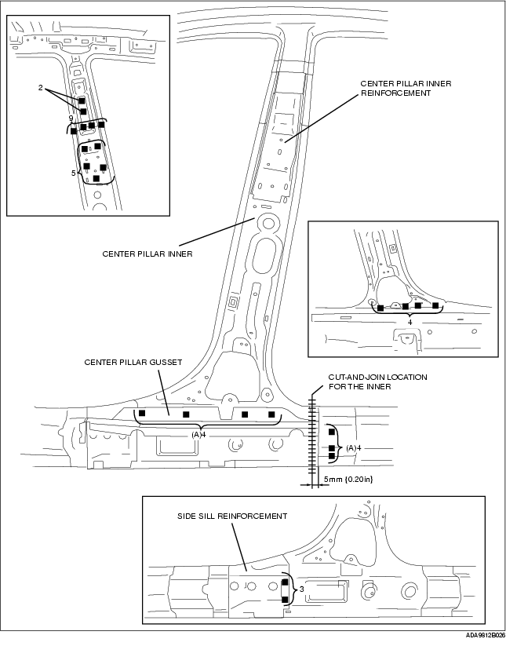

Center pillar installation
1. Install in the following order: center pillar inner reinforcement, center pillar reinforcement, and side sill reinforcement.
2. Weld in 8 locations indicated by (A), and then trial-fit the center pillar gusset.

3. To prepare for installation, cut area (B) on the new center pillar reinforcement, and cut section (C) on the new B-pillar reinforcement.
4. Weld in 34 locations indicated by (D), and then trial-fit the center pillar reinforcement and the B-pillar reinforcement.
5. Weld in 11 locations indicated by (E), and then install the center pillar reinforcement and the B-pillar reinforcement to the existing parts.
6. Weld in 3 locations indicated by (F), and then install the part cut from the center pillar reinforcement to the center pillar reinforcement.

7. Weld in 56 locations indicated by (G), then install the center pillar outer.
- • In areas where the outer, reinforcement, inner, etc. are in 3-4 layers, drill holes for plug welds in all but the innermost panel.
- • When joining the new and old parts, temporarily install and fit the new part in position, measure each dimension according to the body dimension, then adjust the position to align it to the standard dimensions.